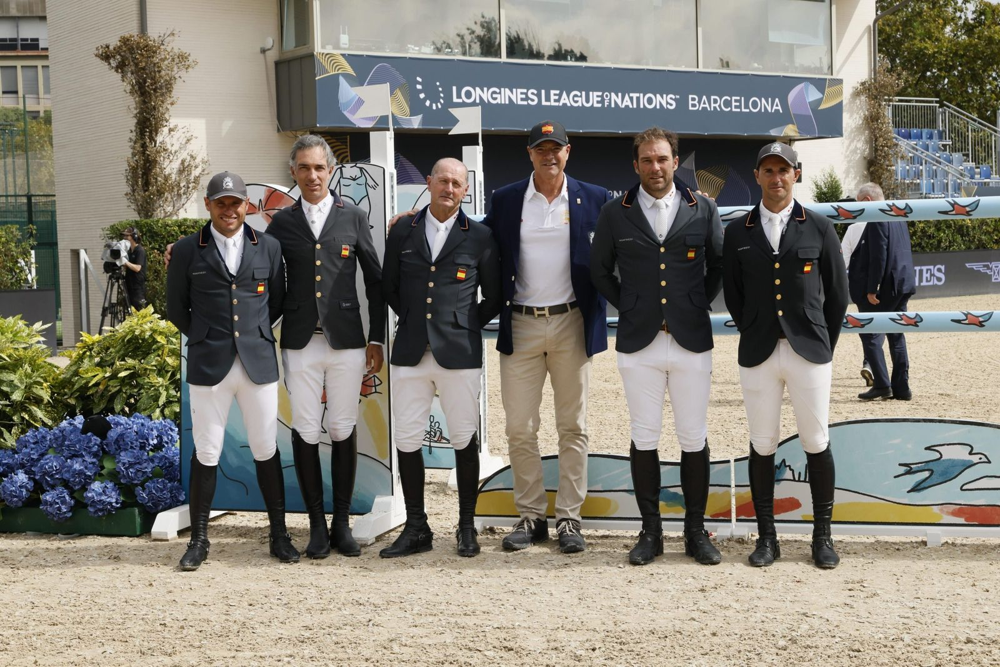

Un desempate con Brasil decide la Final de la Longines League of Nations para Alemania
Alemania se adjudicó este domingo en el Real Club de Polo de Barcelona la Final de la Longines League of Nations tras igualar a cuatro puntos con Brasil. España fue novena, con el doble cero de Julio Arias.

Dos mangas no bastaron para separar a los dos primeros. Richard Vogel salió al desempate con "Cloudio", hizo cero y paró el crono en 40,85 s. Pessoa y "Major Tom" fueron más rápidos, con 39,48 s, pero sumaron cuatro puntos y la victoria se quedó en el lado alemán.
El equipo de Otto Becker llegó a ese desenlace gracias a Marcus Ehning con "Coolio 42" y Jörne Sprehe con "Toys", que terminaron sin penalizaciones los dos recorridos. Vogel completó limpio la primera manga y dejó cuatro puntos en la segunda. Los cuatro de Sophie Hinners con "Iron Dames my Prins" en el primer recorrido fueron el resultado descartado.
Bélgica cerró el podio con cinco puntos. Por detrás quedaron Estados Unidos, cuarto con doce, e Italia con dieciséis. Gran Bretaña e Irlanda sumaron veinte, y Francia, veintiuno.
España acabó novena con 36 puntos, la misma posición que el año pasado en esta final. Bajo la dirección de François Mathy Jr., el asturiano Julio Arias fue el único del equipo que terminó sin faltas: dos ceros con "Filou du Manoir".
En la primera manga, el cero de Arias se sumó a los cuatro puntos de Armando Trapote con "Matilda" y a los doce de Luis Jesús Escobar con "Edesa's Jento de Belle Vue". Carlos Bosch y "Jolie van der Berghoeve Kar" también hicieron doce, que fueron el resultado descartado. El equipo pasó el ecuador con 16 puntos.
A la segunda manga solo accedían tres jinetes por equipo y saltaron Trapote, Bosch y Arias. Arias repitió el recorrido limpio, Bosch hizo ocho y Trapote doce. Esos 20 puntos dejaron el total español en 36. Kevin González de Zárate y "Djoural de Lizet" formaban el binomio reserva.
Todo sobre Longines League of Nations Final →
Por Lucía Valdeolmos